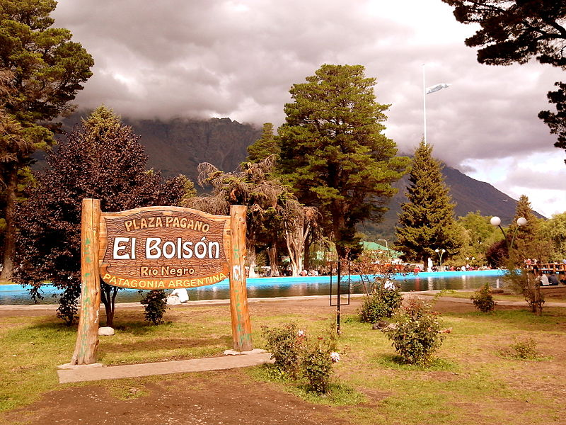

El Bolsón es una ciudad ubicada en la Patagonia andina, en el extremo suroeste de la provincia de Río Negro, Argentina. Es la ciudad más importante de la Comarca andina del paralelo 42, microrregión que se extiende también en la provincia de Chubut, con un paisaje de montañas, bosques, ríos y lagos e importante actividad turística.